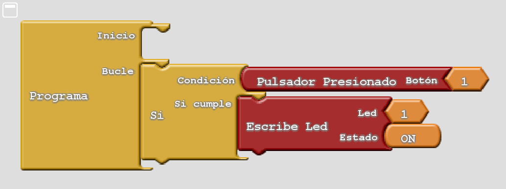
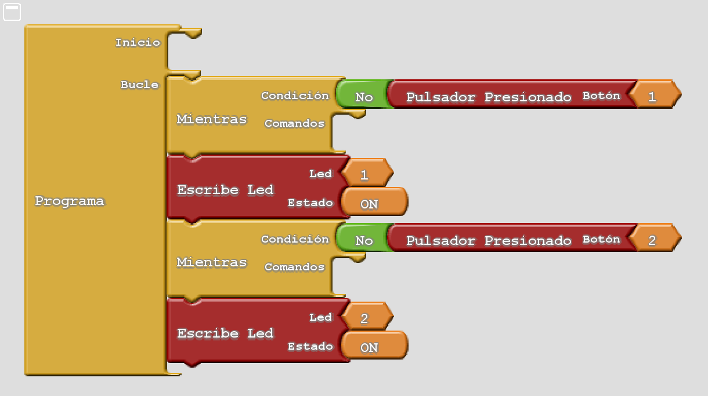
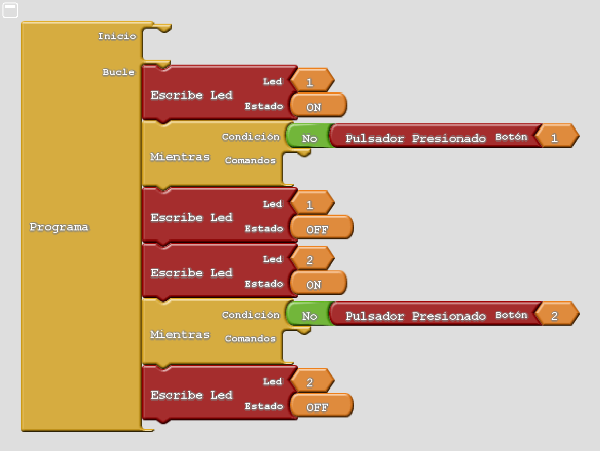
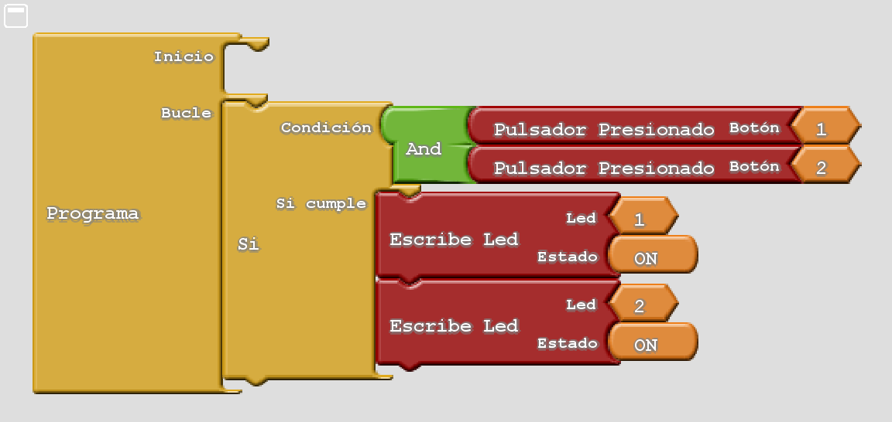
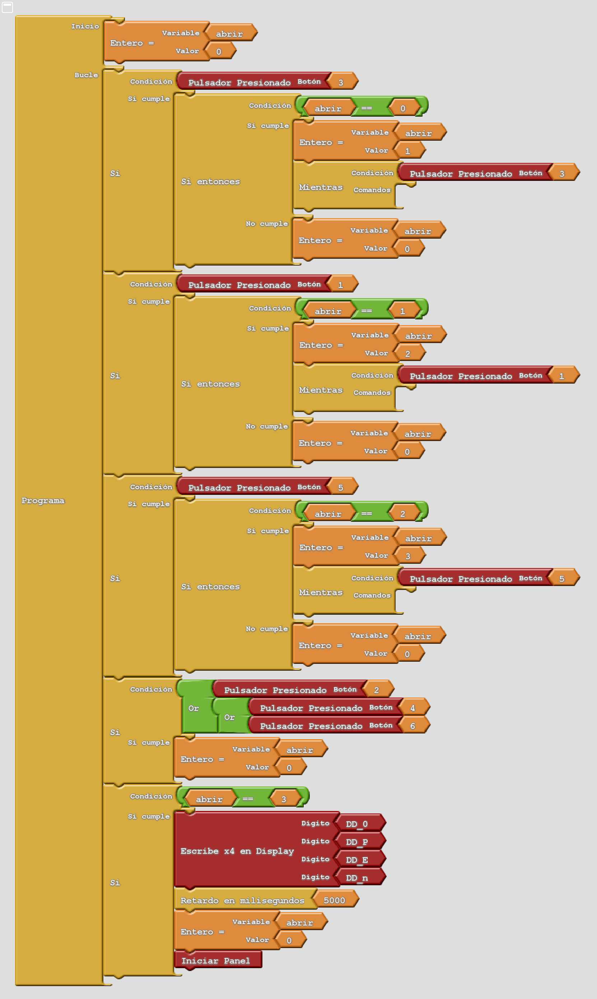

4. Exercicis amb botons¶
Programa els blocs necessaris per resoldre els problemes següents.
** Poseu el botó.

Completa l'exercici anterior per desactivar el LED D1 si es prem el botó.
** Seqüència d’encesa. ** Copieu el programa següent que il·lumina dos LED amb botons. El LED D1 s’encendrà en prémer el botó 1. A continuació, el LED D2 s’encendrà quan prémer el botó 2. El LED D2 no es pot activar abans que el LED D1 s’encengui.

Completeu el programa anterior perquè els botons s’encenguin tots els LED al D6.
** Desplaçament de llum. ** Copieu el programa, que funciona de la manera següent:
Al començament del programa, el LED D1 està encès.
En prémer el botó 1, el LED D1 s’apagarà i el LED D2 s’encendrà.
A continuació, quan es prem el botó, el LED D2 s’apagarà i el LED D3 s’encendrà.

Completeu el programa anterior per continuar il·luminant el LED a la dreta fins que arribeu al LED D5.
Al final, prement el botó 5, el LED D5 s’apagarà i tornarà a apagar el LED D1.
** Desplaçament invers. ** Modifiqueu el programa anterior perquè els LED es mostrin de D5 a D1.
Quan el torn de desactivar el LED D1, el LED D5 s’encendrà de nou.
** Encenament bimanual ** Copieu el programa següent que s’encén els LED D1 i D2 en prémer els botons 1 i 2.
Aquest programa pot servir per actuar una premsa perillosa quan es pressionen alhora, amb les dues mans, dos botons separats els uns dels altres. Això protegeix les mans del perill de la premsa.

Modifiqueu el programa anterior de manera que els tres LED D1, D2 i D3 s’encenguin prement alhora els tres botons 1, 2 i 3.
Els tres LED s’han d’apagar en prémer el botó 4.
** Bloqueig electrònic. ** Copieu el programa següent que simula un bloqueig electrònic. En prémer per ordre de la seqüència de botons 3, 1 i 5, s’obrirà un bloqueig electrònic. L’obertura s’indica amb la paraula oberta a la pantalla.

Modifiqueu l'exercici anterior de manera que el bloqueig s'obri prement la seqüència del botó 2, 6, 1 i 4.
{kind=link}
{kind=link}
{kind=link}
{kind=link}
{kind=link}